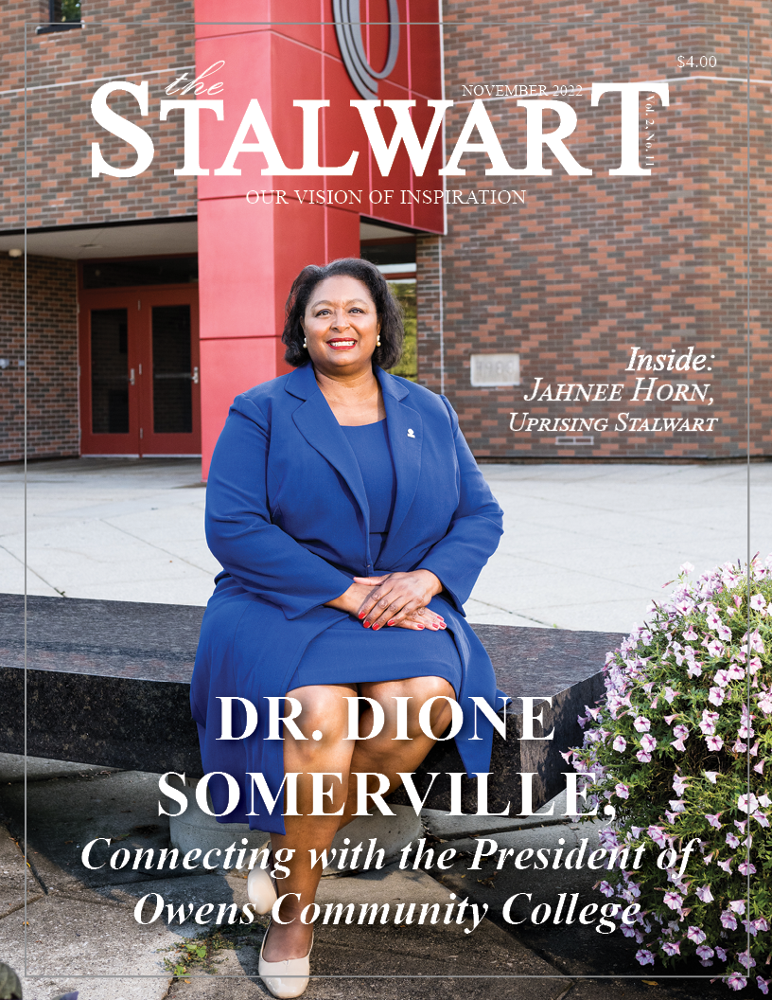

Editors Love Letter
How are you feeling mentally, physically, and financially? This month is National Diabetes awareness month and inside you will find information on this. If you’re someone that is interested in getting your student loan debit forgiven, you’ll find information about that as well. Living a venerable life is what Dr. P discusses because we all have issues that affect us emotionally. Are you moving your body? Do you know that our bodies need motion to stay healthy? We invite you to read this and every issue from cover to cover to see if there is something that can assist you in improving your life. That’s why The Stalwart exists. We love our community, and we hope that you learn about Stalwart people that can offer information to help you along your life’s journey. Learning is important to this month’s Stalwart star Dr. Somerville, President of Owens Community College. She wants you to know that education is the key to a better future. We hope you are inspired by what you read and we hope that you exercise your right to vote! We wish you well.
WELCOME
Click link above to SUBSCRIBE so you don't miss a single article! Because you don't want to miss a single one!